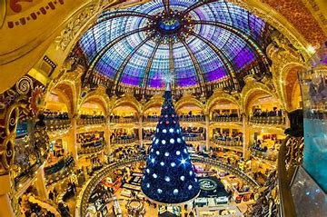
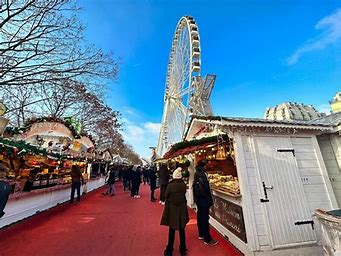

En los Campos Elíseos en Navidad, puedes ver miles de luces decorando los árboles de la avenida y un mercado navideño con puestos de artesanía, comida y regalos. El ambiente festivo se completa con vistas iluminadas hasta el Arco de Triunfo.
Campos Eliseos


Galerías Lafayatte

En Navidad, las Galerías Lafayette se transforman en un espectáculo visual: su icónica cúpula se adorna con un gigantesco árbol temático que cuelga en el centro de la tienda, y cada año se elige un tema único para decorar las vitrinas con escenas animadas y luces. Es especial por su combinación de lujo y creatividad, atrayendo a visitantes de todo el mundo que vienen a ver sus elaboradas exhibiciones, convirtiéndola en uno de los símbolos festivos más emblemáticos de París.
El mercado navideño de La Defense

El mercado navideño de La Défense es el más grande de París, con más de 300 chalets de madera que ofrecen artesanías, decoraciones, ropa y una deliciosa selección de comida y bebida navideña como vino caliente, quesos y dulces típicos franceses. Es especial por su diversidad y tamaño, que lo hace un verdadero "pueblo navideño" en medio de los rascacielos, mezclando el encanto festivo tradicional con el moderno entorno de La Défense.
El trocadero

En Navidad, el Trocadéro se convierte en un espacio festivo con una pista de hielo y un mercado navideño, además de una vista espectacular de la Torre Eiffel iluminada. Es especial porque combina la magia navideña con uno de los panoramas más icónicos de París, creando un ambiente romántico y alegre ideal para disfrutar en familia o en pareja.